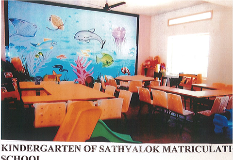

Matriculation School

- The encouragement and inspiration of the well wishers and philanthropists, and the dream of Managing Trustee Sri Sobhraj, the trust envisaged to take up the 7 crores venture of starting "Sathyalok Matriculation School" for normal children to cater to the needs of the school going children.
- This is a co-education English medium school to impart man making education and the children will be trained as model citizens of the society.
- Apart from school education students will have the opportunity of associating with senior citizens and Multi challenged and mentally challenged children with their love and affection which inculcates the habit of serving others and also make them aware of the neglected people of our society.
- The school is adjacent to the trust office, with greenery and well constructed class rooms, Play ground, Reading room, computer room and latest play equipment.
- The teachers are well qualified, experienced and with excellent proficiency in English communication.
- The school building is well designed and on par with International Schools in and around Chennai city. It is having water facility, good breeze and ventilation.
- The transportation facility is provided to get the children from different areas of the city.